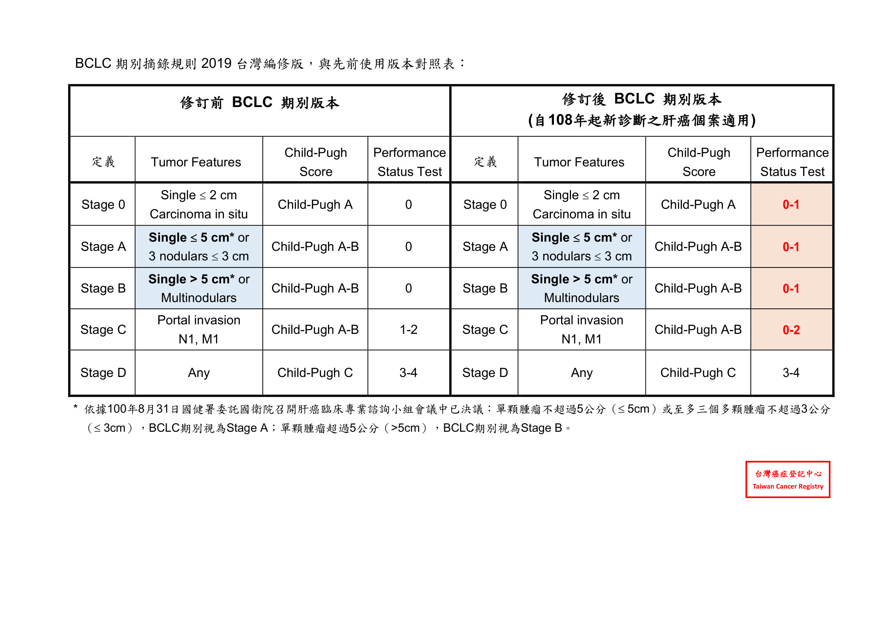
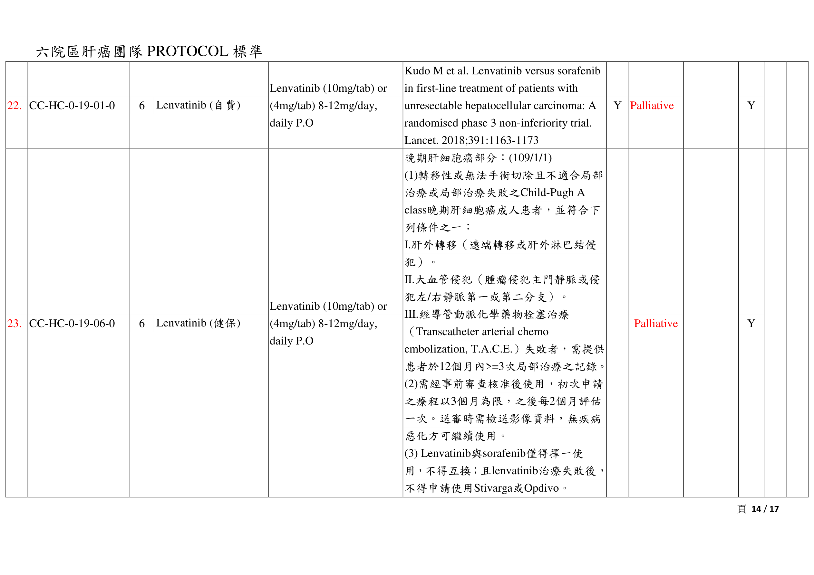
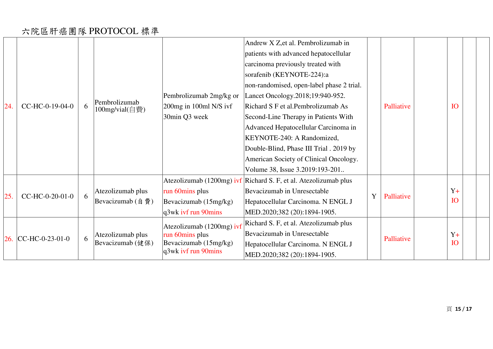
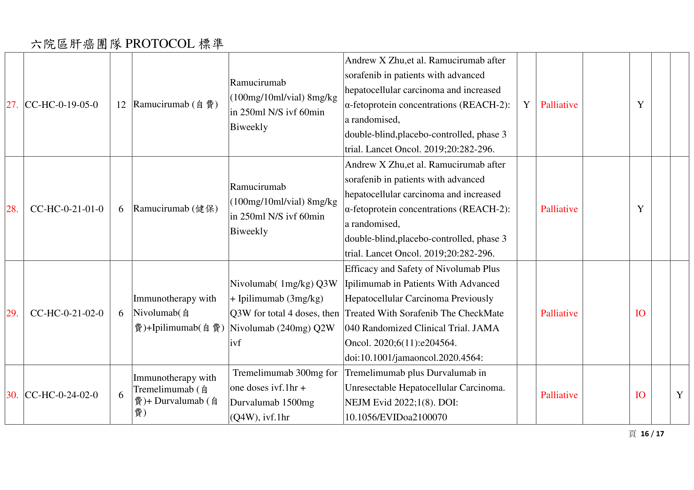
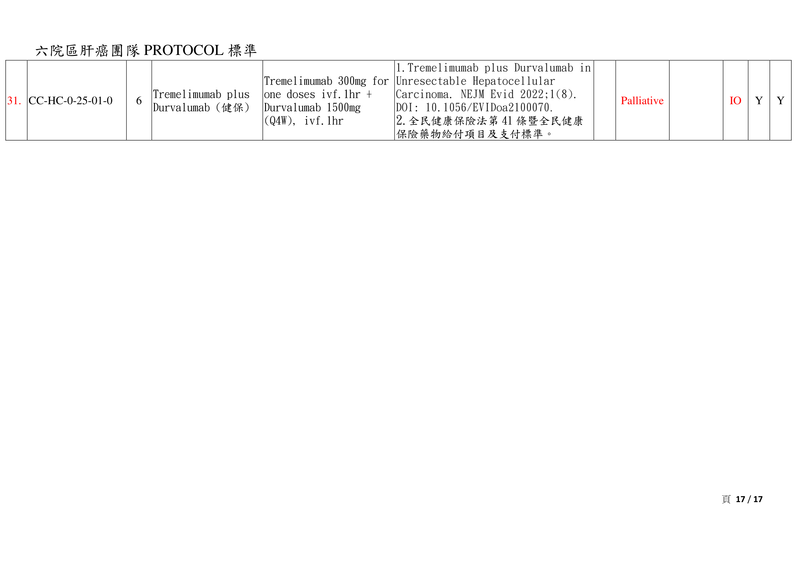

總覽
臨床上先抓三條主軸：Tumor burden、Child-Pugh、PST。接著依 BCLC 落入 HCC-1 到 HCC-5。任何期別若先遇到腫瘤出血，優先做 palliative TAE 止血，再回主流程。
Stage 0 / HCC-1
單一 <= 2 cm
Child-Pugh A
PST 0-1
單一 <= 2 cm
Child-Pugh A
PST 0-1
Stage A / HCC-2
單一 2-5 cm 或 <=3 顆且各 <=3 cm
Child-Pugh A-B
PST 0-1
單一 2-5 cm 或 <=3 顆且各 <=3 cm
Child-Pugh A-B
PST 0-1
Stage B / HCC-3
單一 > 5 cm 或多顆
Child-Pugh A-B
PST 0-1
單一 > 5 cm 或多顆
Child-Pugh A-B
PST 0-1
Stage C / HCC-4
Portal invasion / N1 / M1
Child-Pugh A-B
PST 0-2
Portal invasion / N1 / M1
Child-Pugh A-B
PST 0-2
Stage D / HCC-5
Child-Pugh C 或 PST 3-4
Child-Pugh C 或 PST 3-4
先分期
- 單顆 <= 5 cm 或 <=3 顆且最大 <= 3 cm → Stage A
- 單顆 > 5 cm → Stage B
- Portal invasion / N1 / M1 → Stage C
再抓治療方向
- Stage 0-A：根除性治療優先
- Stage B：TACE / 局部控制 + 整合療法
- Stage C：systemic 為主，視情況整合 RT / TACE / 手術
- Stage D：支持性療法，移植視條件
長庚特色
- PBT 被納入 HCC stage 0-C 的選項
- 組合療法定義很廣：RT、PBT、HAIC、TA(C,R)E、systemic、resection、LT、local ablation 都可組合
重點例外：任何期別若腫瘤出血，先 palliative TAE 止血，再回到 guideline treatment。
診斷標準
CGMH guideline 明確寫出：不是所有病患都需要切片。符合影像與生化條件時，可做臨床診斷。
Priority 1
- Pathology 或 Cytology
- 高級別異型增生結節可考慮 special stain：CD34、CK7、glypican-3
Priority 2
- 肝硬化 + 腫瘤 >= 1 cm
- CEUS 或三期 CT 或 MRI 出現一個典型 HCC 影像即可
Priority 3
- 肝硬化 + 腫瘤 >= 1 cm
- 若第一次 dynamic image 為 atypical
- 其他對比增強檢查需顯示 arterial hypervascularity 且 venous / delayed washout
- CEUS：arterial hypervascular + venous / kupffer washout
- MRI Primovist：arterial hypervascular + hepatobiliary phase hypodense
Priority 4
- 腫瘤 >= 1 cm，有無肝硬化皆可
- 具典型 HCC 影像
- 加上下列之一：AFP >= 200 ng/mL、PIVKA-II >= ULN、HBV/HCV
Initial work-up：Chest image、CT/MR、ALB、PT、Bil-T、AFP、HBsAg、Anti-HCV。PIVKA-II 抽血前應避免 vitamin K 或 warfarin 干擾。
BCLC 分期
這裡以 2026 CGMH guideline 末頁附表與 2019 台灣編修版再核對一次。BCLC stage 與 HCC-1 到 HCC-5 對應如下。
| Stage | Tumor features | Child-Pugh | PST | 對應處置主軸 |
|---|---|---|---|---|
| 0 | Single <= 2 cm | A | 0-1 | Resection / LT / Local ablation / Ablative RT option |
| A | Single <= 5 cm 或 3 nodules <= 3 cm | A-B | 0-1 | Resection / LT / Ablation / TACE +/- systemic / Combination |
| B | Single > 5 cm 或 Multinodulars | A-B | 0-1 | TACE-based approach / Resection if resectable / Combination |
| C | Portal invasion / N1 / M1 | A-B | 0-2 | Systemic / Combination / Trial / selective local strategy |
| D | Any | C | 3-4 | Best supportive care / LT if still eligible |
台灣編修版重點：Stage 0/A/B 的 PST 都是 0-1；Stage C 是 0-2。單顆 >5 cm 明確歸 Stage B。
各期處置
以下以 HCC-1 到 HCC-5 原文內容重整，盡量保留 CGMH 實際處置排列與組合概念。
Stage 0 / HCC-1
- Surgical resection
- Local ablation：RFA / PEI / MCT / PAI / Cryotherapy
- Liver transplantation：依 UCSF criteria
- TA(C,R)E 可作為 option
- Ablative RT 可作為 option
Stage A / HCC-2
- Surgical resection
- Local ablation
- Liver transplantation：依 UCSF criteria
- TA(C,R)E +/- systemic therapy
- Combination therapy：RT、PBT、HAIC、TA(C,R)E、systemic、resection、LT、local ablation 任意組合
- Ablative RT option
Stage B / HCC-3
- Surgical resection if resectable
- Liver transplantation：依 UCSF criteria
- TA(C,R)E +/- systemic therapy (targeted / chemotherapy / IO)
- Systemic therapy
- Combination therapy
- Local ablation
- Ablative RT option
Stage C / HCC-4
- Systemic therapy
- Combination therapy
- TA(C,R)E +/- systemic therapy / combination therapy
- Clinical trial
- Resection for resectable primary and metastatic extra-hepatic tumor +/- systemic therapy
- 若 main portal vein patent，可保留更多局部整合策略
- 若 no patent，通常直接進 systemic / combination / trial
Stage D / HCC-5
- Best supportive care
- Liver transplantation：若移植原則仍相符
Ablative RT 定義：BED10 > 80 Gy，且 BCLC 0 + A 需在 6 週內完成療程；用於不適合 surgery 或 local ablation 的病患。
全身性治療與 protocol
以下內容依 2026.02.10 protocol 檔核對。這份 protocol 同時含 local regional therapy 與 systemic therapy，但晚期臨床主力仍是標靶與免疫治療。
免疫治療 / IO
- Atezolizumab + Bevacizumab：健保 / 自費，1200 mg + 15 mg/kg q3wk
- Tremelimumab + Durvalumab：自費與健保版本皆列入；Tremelimumab 300 mg 單次 + Durvalumab 1500 mg q4wk
- Nivolumab + Ipilimumab：自費，先 Nivolumab 1 mg/kg + Ipilimumab 3 mg/kg q3wk x4，再 Nivolumab 240 mg q2wk
- Nivolumab：自費 protocol 仍在，健保版本已刪除
- Pembrolizumab：自費，但文件註記為不活動檔
標靶治療
- Sorafenib：健保 / 自費，200 mg 1-2# BID
- Regorafenib：健保 / 自費，160 mg/day，d1-21 q4wk；用於 sorafenib failure 後
- Lenvatinib：健保 / 自費，8-12 mg/day；健保需轉移、大血管侵犯或 TACE failure
- Ramucirumab：健保 / 自費，8 mg/kg q2wk
健保條件重點
- Lenvatinib 健保：轉移、肝外淋巴結侵犯、大血管侵犯，或 12 個月內 >=3 次 TACE 失敗
- Lenvatinib 與 Sorafenib 只能擇一，不得互換
- Lenvatinib 失敗後，不得再申請 Regorafenib 或 Nivolumab
- Regorafenib 健保：需 sorafenib 治療失敗，Child-Pugh A class
其他保留 protocol
- mFOLFOX6、FMP、Gemcitabine + Cisplatin、GEMOX、TS-1、UFT 等化療方案仍列於 protocol
- HAI / HAIC 仍以 palliative local regional therapy 形式存在
- 系統性治療頁面不等於只有一線健保藥，檔案保留多種歷史與自費選項
RT / PBT
RT protocol 區分 photon RT / SBRT 與 proton RT。PBT 對長庚來說是明顯強項，且在 HCC guideline 中被保留作為 stage 0-C 的選項之一。
Photon RT / SBRT
- Curative RT 建議先備齊 Child-Pugh、CBC、生化、肝功能、病毒狀態、tumor marker
- 建議 3D conformal 或 IMRT，並鼓勵 CBCT guidance
- Hypofractionated external beam RT：BED >55 Gy，Child A 時高劑量較可行
- SBRT：30-60 Gy in 4-6 fractions
- SBRT 正常肝限制：Dmean < 1800 cGyE，D600cc < 1500 cGyE，V18Gy < 33%
Proton RT
- 需 4D-CT；若呼吸移動 >1 cm，需考慮 respiratory gating
- Small peripheral tumor <5 cm，不靠胸壁與重要器官：60 CGE / 5 fx
- 距 hilar region 超過 2 cm，且不靠近 bowel / stomach / heart：66 CGE / 10 fx
- 距 hilar region 2 cm 內或貼近重要器官：72.6 CGE / 22 fx
限制條件
- HBV carrier、HCV carrier、Child-Pugh B、CLIP > 1 對 RILD 較敏感
- 這類病人劑量限制需採更保守策略
- Curative case 的 MR simulation 與 dynamic contrast imaging 被高度建議
追蹤建議
- RT 後 1-2 個月先追 history / PE / liver function
- 前 2 年每 3-4 個月追蹤
- 影像建議 contrast MRI 或 CT；首次應在 3 個月內
- MRI with Primovist 有助於 focal liver reaction 與早期復發偵測
肝臟移植
CGMH guideline 與健保條件頁都把移植放在重要位置。對不可切除 HCC，需同步思考是否符合 UCSF 路徑。
健保條件
- DDLT：單顆 <= 5 cm；或多顆 <= 3 顆且最大 <= 3 cm
- LDLT：單顆 <= 6.5 cm；或多顆 <= 3 顆且最大 <= 4.5 cm，總直徑 <= 8 cm
超出 UCSF 時
- 先行 loco-regional therapy downstaging
- 每 3 個月再評估，必要時 repeat locoregional therapy
- 若成功 downstage，可考慮 living donor transplantation
- 若 disease progression，轉 systemic or alternative therapy
Child-Pugh
CGMH guideline 附錄直接附上癌登摘錄規則版本。總分 5-6 為 A、7-9 為 B、10-15 為 C。
| 項目 | 1 分 | 2 分 | 3 分 |
|---|---|---|---|
| Ascites | None | Slight / easy controlled | Moderate / poorly controlled |
| Bilirubin | < 2 mg/dL | 2-3 mg/dL | > 3 mg/dL |
| Albumin | > 3.5 g/dL | 2.8-3.5 g/dL | < 2.8 g/dL |
| PT / INR | < 4 秒 或 INR < 1.7 | 4-6 秒 或 INR 1.7-2.3 | > 6 秒 或 INR > 2.3 |
| Encephalopathy | None | Grade 1-2 | Grade 3-4 |
來源核對
這一頁讓你直接對照原文。上半部是我這次整理時實際核對的章節，下半部放入 guideline 原頁截圖，方便臨床使用時做快速比對。
CGMH Guideline
- Page 5：Diagnosis priority 1-4、initial work-up
- Page 7：BCLC 總流程與註解
- Pages 8-12：HCC-1 到 HCC-5 詳細處置
- Page 13：移植 downstaging 流程
- Page 14：DDLT / LDLT 尺寸條件
- Pages 19-20：Child-Pugh 與 BCLC staging 表
RT / Systemic protocol
- RT page 5：SBRT 30-60 Gy / 4-6 fx 與正常肝限制
- RT pages 7-9：Proton RT 劑量與器官限制
- Systemic pages 10-17：Sorafenib、Regorafenib、Lenvatinib、Atezo+Bev、Treme+Durva、Ramucirumab、Nivo+Ipi 等
- Systemic page 3：2025/2026 新增 Tremelimumab + Durvalumab 健保
提醒：這份 HTML 是互動摘要，不取代原始 PDF。若遇到健保申請、精確劑量、器官限制或 trial eligibility，請回原始 protocol 再核對。
診斷標準：CGMH guideline p.5

BCLC 總流程：CGMH guideline p.7

HCC-1 / Stage 0：CGMH guideline p.8

HCC-2 / Stage A：CGMH guideline p.9

HCC-3 / Stage B：CGMH guideline p.10

HCC-4 / Stage C：CGMH guideline p.11

HCC-5 / Stage D：CGMH guideline p.12

移植 downstaging：CGMH guideline p.13

健保移植條件：CGMH guideline p.14

Child-Pugh：CGMH guideline p.19

BCLC 表：CGMH guideline p.20

BCLC 台灣編修版：獨立附檔 p.1

SBRT 劑量與限制：RT protocol p.5

PRT 劑量：RT protocol p.8

PRT 限制與追蹤：RT protocol p.9

Lenvatinib：systemic protocol p.14

Atezolizumab + Bevacizumab：systemic protocol p.15

Ramucirumab / Nivo + Ipi / Tremelimumab + Durvalumab：systemic protocol p.16

Tremelimumab + Durvalumab 健保：systemic protocol p.17
